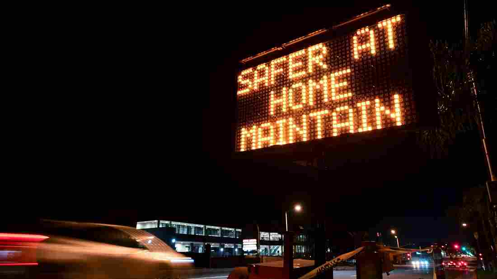

CDC Shortens Its COVID-19 Quarantine Recommendations
Updated at 12:50 p.m. ET
The Centers for Disease Control and Prevention has revised its guidelines for people who may have been exposed to the coronavirus.Now, instead of the standard 14-day quarantine it has been recommending, the CDC says that potential exposure warrants a quarantine of 10 or seven days, depending on one's test results and symptoms.
If individuals do not develop symptoms, they need only quarantine for 10 days; if they test negative, that period can be reduced to just one week.
The revision marks a significant change from the CDC's recommendations since the start of the pandemic earlier this year.While the agency says a 14-day quarantine remains the safest option, it acknowledged this length placed difficult demands on people.
'Reducing the length of quarantine may make it easier for people to take this critical public health action by reducing the economic hardship associated with a longer period, especially if they cannot work during that time,' Dr.Henry Walke, the CDC's incident manager for its COVID-19 response, told reporters on a conference call Wednesday.
'In addition, a shorter quarantine period can lessen stress on the public health system and communities, especially when new infections are rapidly rising.'
Walke added that people should still watch closely for symptoms — such as fever, a cough or a loss of taste or smell — for a full 14 days after possible exposure.
John Brooks, chief medical officer for CDC's COVID-19 response, said the agency based its revised guidelines 'on extensive modeling, not just by CDC but by other agencies and partners.'
The announcement, while not unexpected, was welcomed with cautious optimism by several epidemiologists closely following the pandemic.
'Shortening the recommended quarantine period is an important, pragmatic move.It allows health officials to focus their efforts on the period of time that people are most likely to become contagious, which will hopefully boost public compliance with quarantine recommendations,' Jennifer Nuzzo of the Johns Hopkins Center for Health Security told NPR after the announced revision.
'It's important that we try and remove some of the disincentives that are currently preventing people from being able to quarantine,' she added.'Shortening the time that they have to stay home may enable more people to stay home as recommended, which will aid in efforts to stop the spread of this virus.'
For the upcoming holiday season, the CDC is recommending people stay home — just as it did before the Thanksgiving holiday.
But if people do travel, the guidelines are that individuals should get a coronavirus test one to three days before travel and then three to five days after travel, combined with quarantine for seven days after arriving.
NPR's Rob Stein and Joe Neel contributed to this report.
Posted On: 2020-12-02T16:09:00
Posted By: Colin Dwyer

Content Date: 2020-12-02
Download Date: 2021-04-21
Document ID: L0C04ASTT